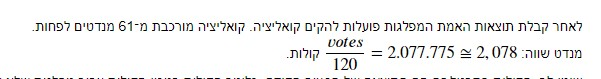
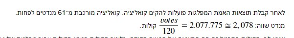

היי לא הבנתי כלכך איך מתבקש לחשב את המנדטים בשאלה
אני מחלק את מספר הקולות ב 120?
או עושה משהו עם המספר 2.077.775 ?

אם מישהו יכול לעזור לי אני אשמח 

היי לא הבנתי כלכך איך מתבקש לחשב את המנדטים בשאלה
אני מחלק את מספר הקולות ב 120?
או עושה משהו עם המספר 2.077.775 ?

אם מישהו יכול לעזור לי אני אשמח
המספר 2078 מייצג את כמות הקולות השקולה למנדט אחד.
יש סה"כ 120 מושבים/מנדטים בפרלמנט של הגמדים.
אז בהינתן שאתה יודע כמה קולות השיגה מפלגה שעברה את אחוז החסימה, איך תחשב את כמות מנדטים שלה?
תקן אותי אם אני טועה:
כמות הקולות חלקי 2078?
אל תסמוך על תשובות ממקור חיצוני, למה שלא תקודד את זה בפונ’ כמו שמבקשים בשאלה?
ואז תבדוק לפי ההנחיות בהמשך אם לפי הצורה שהצעת סך המנדטים של כל המפלגות שעברו את % החסימה אכן מסתכם ל-120.
אם כן - אז סימן שהחישוב שלך נכון, וזה הרבה יותר מספק מאשר שמישהו יגלה לך את התשובה 
היי
איזה פלט אמור להיות , רשימה של שמות הקואליציה בלי מספר המנדטים ?
תודה
היי חברה עשיתי הכל לפי מה שרשום, רק סכום המנדטים מסתכם לי ב170, אבל צדקתי בכל הבדיקות עד לשם, למישהו יש רעיון?
מוודא שהתייחסת רק למפלגות שעברו את אחוז החסימה?